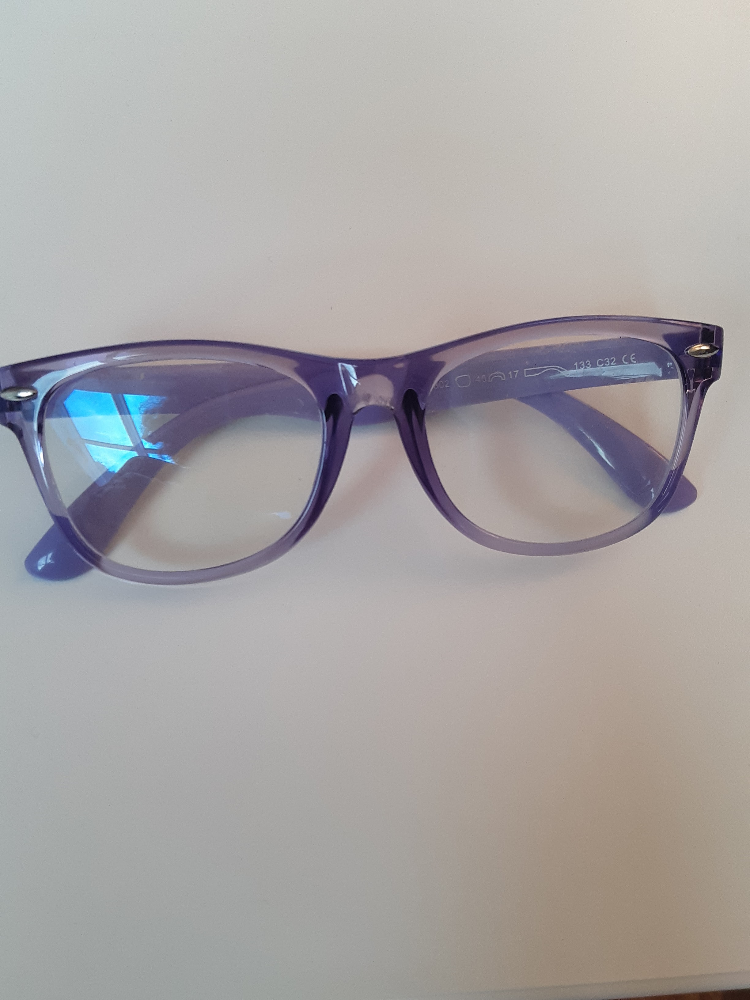
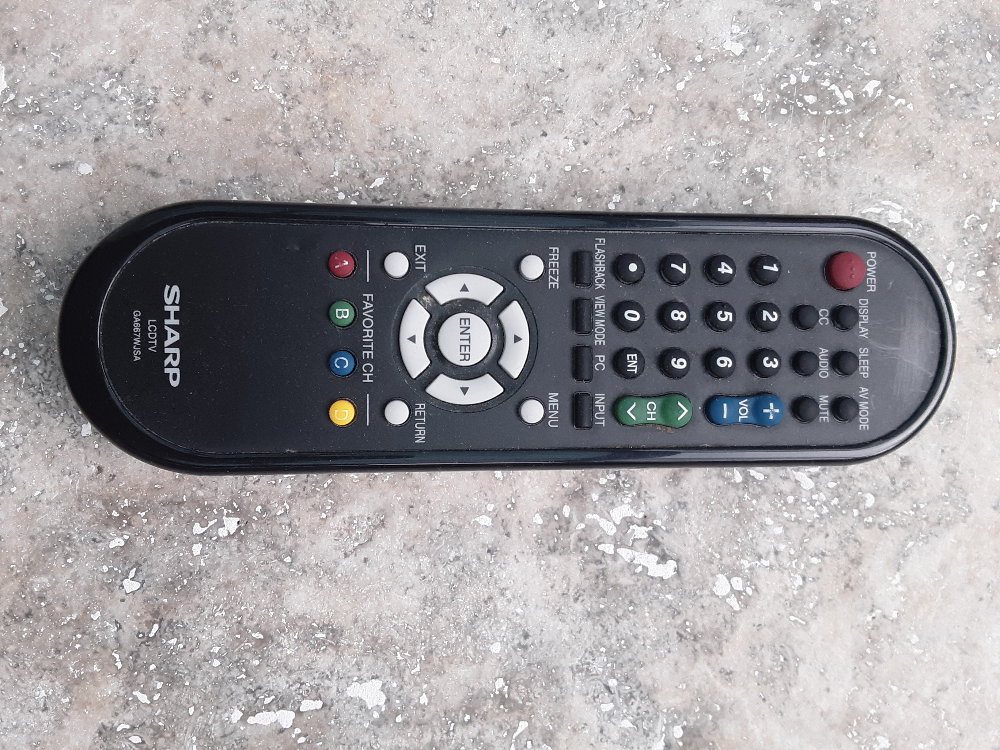

Shoes
Output on Mobile Net: Running Shoes
Output On Google Lens: Running Shoes
Result: Both are Accurate

Pencil
Output on Mobile Net: Desktop Computer
Output On Google Lens: Pencil
Result: Google Lens is more accurate
scizzors
Output on Mobile Net: Sunglasses
Output On Google Lens: Scizzors
Result: Google Lens is more accurate

Mouse
Output on Mobile Net: Joystick
Output On Google Lens: Wireless bluetooth
Result: None are accurate

Pillow
Output on Mobile Net: Stole
Output On Google Lens: Pillow
Result: Google Lens is more accurate

Glasses
Output on Mobile Net: Glasses
Output On Google Lens: Glasses
Result: Both are Accurate
remote
Output on Mobile Net: Remote Control
Output On Google Lens: Remote
Result: Both are Accurate
Piggy Bank
Output on Mobile Net: Backpack
Output On Google Lens: Piggy Bank
Result: Google Lens is more accurate
Bowl
Output on Mobile Net: Cup
Output On Google Lens: Tail Light
Result: None are accurate

Mug
Output on Mobile Net: Punching Bag
Output On Google Lens: Mug
Result: Google Lens is more accurate

I have tested 10 images
Mobilenet predicted 3 correctly and Google Lens predicted 8 correctly.
So according to my case study, Google Lens is more Accurate
Mobilenet predicted 3 correctly and Google Lens predicted 8 correctly.
So according to my case study, Google Lens is more Accurate